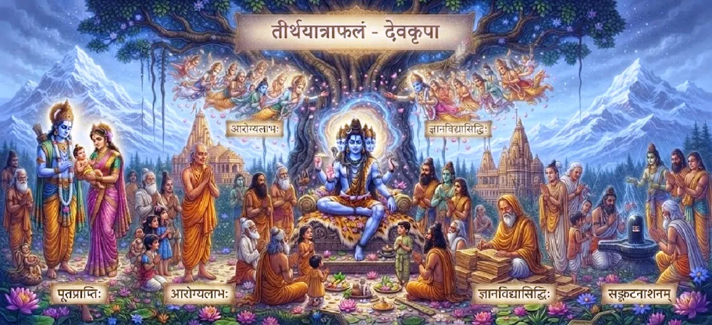

The Blessings of Sacred Pilgrimage
The twenty-seventh chapter of the Kotirudra Samhita details the profound spiritual boons, divine grace, and life-transforming blessings showered upon devotees who complete sacred pilgrimages.
Building upon the merits of worshipping Jyotirlingas, this chapter highlights how the grace of Lord Shiva manifests as inner peace, family protection, and ultimate liberation in the life of the seeker.
It serves as an inspiring reminder of the boundless rewards awaiting those who dedicate their journey to the Divine.
Chapter 27 Highlights
Divine Boons
The specific spiritual and material gifts granted by Shiva.
Inner Fulfillment
Deep emotional and psychological peace filling the heart.
Family Upliftment
Extending the holy merit to protect one's entire lineage.
Removal of Obstacles
Clearing all hurdles on the path of spiritual growth.
Grace of Protection
Shiva's watchful shield guarding the faithful devotee.
Seed of Liberation
Planting the permanent foundation for final moksha.
Core Topics in This Chapter
- 01The True Nature of Pilgrimage Blessings→
- 02Attaining Unshakable Peace of Mind→
- 03Redemption and Blessing of the Family Lineage→
- 04Destruction of Fear and Sorrow→
- 05Harmony of Material and Spiritual Life→
- 06Lord Shiva's Readiness to Grant Boons→
- 07Protection from Sudden Calamities→
- 08The Ultimate Fruit of Journey Completion→
- 09Transformative Grace in Daily Existence→
- 10Transition to Chapter 28→
The True Nature of Pilgrimage Blessings
The text explains that the blessings received from a sacred pilgrimage are not temporary worldly gains, but enduring spiritual boons that elevate the soul.
They reshape the devotee’s perspective, filling life with divine purpose and clarity.
Attaining Unshakable Peace of Mind
One of the primary blessings bestowed upon the returning pilgrim is a deep, abiding peace of mind that remains undisturbed by external chaos.
Anxiety and mental agitation dissolve in the warmth of Shiva's grace.
Redemption and Blessing of the Family Lineage
The chapter reveals that when an individual completes a sacred pilgrimage with pure devotion, the spiritual merit accrued benefits not only them, but their entire family lineage.
Ancestors find peace, and descendants are blessed with righteousness.
Destruction of Fear and Sorrow
The fear of death, existential uncertainty, and emotional sorrow are permanently eradicated from the heart of one who is sheltered by pilgrimage blessings.
Courage and faith take their place.
Harmony of Material and Spiritual Life
Lord Shiva’s grace ensures that the devotee experiences harmony, stability, and abundance in material life while steadily progressing on the spiritual path.
Neither worldly duty nor spiritual aspiration is neglected.
Lord Shiva's Readiness to Grant Boons
Known as Ashutosh (easily pleased), Lord Shiva is ever eager to bestow boons upon those who undertake the effort of seeking Him through sacred travel.
Sincere effort is met with infinite divine generosity.
Protection from Sudden Calamities
Pilgrims who carry the blessings of their holy journey are shielded from sudden calamities, accidents, and malevolent influences.
Divine protection becomes their constant companion.
The Ultimate Fruit of Journey Completion
The ultimate fruit of completing the pilgrimage is the awakening of profound spiritual intuition and an unshakeable connection to the Divine.
The seeker recognizes the presence of Shiva in all things.
Transformative Grace in Daily Existence
The blessings do not fade upon returning home; instead, they infuse daily activities with patience, kindness, and unwavering devotion.
Every action becomes an expression of gratitude.
Transition to Chapter 28
Having detailed the rich blessings bestowed by sacred pilgrimage, the narrative prepares to explore the overarching power of pure devotion to Lord Shiva.
Readers are invited to continue to Chapter 28, The Power of Devotion to Shiva.
Key Teachings of Chapter 27
Enduring Boons
Pilgrimage rewards are spiritual and permanent.
Deep Peace
Unshakable mental calm is granted to the devotee.
Lineage Uplift
The merit uplifts the entire family and ancestors.
Fear Eradication
Existential dread is replaced by divine courage.
Balanced Life
Material stability and spiritual growth coexist.
Active Grace
Shiva actively protects and guides the returning pilgrim.
Spiritual Reflection
The blessings of a sacred pilgrimage extend far beyond the physical journey. When a devotee braves the elements, overcomes obstacles, and stands in reverence before Lord Shiva, they open their heart to an influx of divine grace that reshapes their entire existence. This chapter assures us that no sincere effort made in the name of the Divine goes unrewarded. The peace, protection, and spiritual elevation received become an eternal treasure, guiding the seeker safely through the trials of life and illuminating the path toward ultimate liberation.
Living the Message of Chapter 27
Cherish the peace and lessons learned from your spiritual pursuits, applying them with patience in your daily interactions.
Trust in the protective grace of Lord Shiva to shield you and your loved ones from sudden distress and fear.
Let your life reflect the purity and harmony of a heart touched by divine blessings.
Key Spiritual Concepts
Enduring spiritual and material gifts granted by Shiva.
Deep mental calm untouched by external turbulence.
The extension of sacred merit to protect family and ancestors.
The constant shield guarding the devotee against calamities.
Balanced stability and abundance in worldly existence.
The lasting impact of pilgrimage on daily behavior and consciousness.
Chapter Summary
Kotirudra Samhita Chapter 27 explores the profound blessings and divine grace bestowed upon those who complete sacred pilgrimages. It details how Lord Shiva grants unshakeable mental peace, protection from calamities, family upliftment, and material-spiritual harmony to sincere devotees. By emphasizing the enduring rewards of pilgrimage, this chapter sets the stage for Chapter 28, which examines the overarching power of pure devotion to Shiva.
Frequently Asked Questions
1. What is the core focus of Kotirudra Samhita Chapter 27?
Chapter 27 focuses on the diverse spiritual and material blessings, divine grace, and inner fulfillment bestowed upon devotees who complete sacred pilgrimages.
2. What specific blessings do pilgrims receive from Lord Shiva?
Pilgrims receive mental peace, removal of obstacles, protection from fear, health of mind and body, and the ultimate grace of spiritual liberation.
3. How does this chapter relate to pilgrimage?
While previous chapters covered the journey and the merit of Jyotirlingas, this chapter details the actual fruits and grace showered upon the returning devotee.
4. What role does faith play in receiving these blessings?
Unwavering faith acts as the open vessel that receives the overflowing grace and divine boons of Lord Shiva.
5. What narrative follows this chapter?
The narrative transitions to Chapter 28, 'The Power of Devotion to Shiva'.
6. How does the pilgrim's family benefit from the journey?
The spiritual merit and purified energy accumulated by the pilgrim also uplift and protect their entire family lineage.
“The blessings of a sacred pilgrimage wrap the devotee in an armor of divine grace, ensuring peace in this world and liberation in the next.”
Continue Through Kotirudra Samhita
Chapter 27 explores the blessings of sacred pilgrimage. Continue to Chapter 28, The Power of Devotion to Shiva.